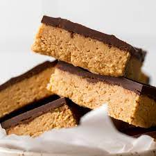

No Bake Peanut Butter Bars

Description
Recipes that don’t require baking are easy and great
any time of year. While they are a year-round treat,
these peanut butter bars are especially wonderful in
the summer, when you don’t want to crank up your oven.
And with them being so quick to make, they’re perfect
for unexpected company or that last-minute teen request.
Ingredients
- 1 cup of unsalted butter
- 2 cups of animal cracker crumbs
- 2 cups of powdered sugar
- 1 1/2 cups of creamy peanut butter
- 10 oz of semi-sweet chocolate
Recipe Instructions
- In a food mixer, combine the first four ingredients until smooth and spread into a 13 x 9 baking pan.
- Melt the chocolate with some extra peanut butter together in the microwave for one minute and stir. Spread this over the top of the original peanut butter layer.
- Chill dessert in the fridge for about an hour, or in the freezer for 15 minutes. Cut into bars and enjoy!